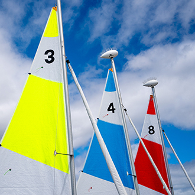
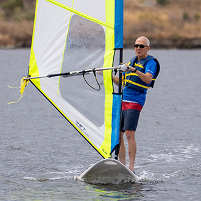
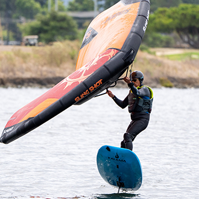
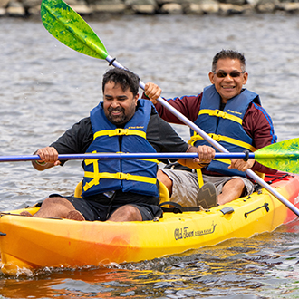
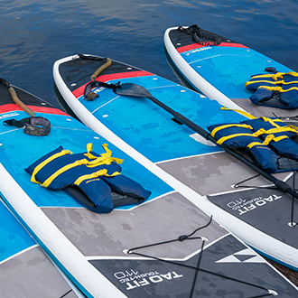
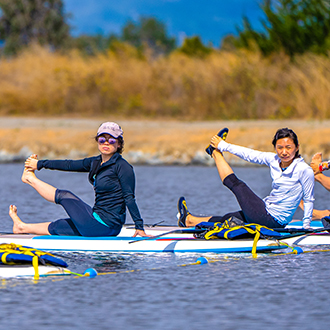
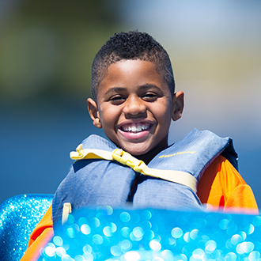
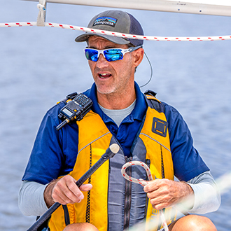

-
 80°
80°
-
 12KT
12KT
learn
beginner to advancedShoreline Lake offers Beginner to Advanced watersports instruction for adults, teens and kids. You’ll find plenty of options for water-based learning activities covering Sailing, Wingfoiling, Standup Paddleboarding, SUP Yoga, Kayaking and Windsurfing, plus a variety of dedicated kid and teen programs, as well as private course sessions with flexible scheduling.
Sailing
Tacking and jibing (turning), sail trim, nomenclature, knots, and water safety. Introductory, intermediate, and advanced sailing courses – including Intro to Racing.
Explore

Windsurfing
Shoreline Lake offers windsurfing courses for all levels of windsurfers. Whether it's your first time trying to stand on a board, or you're picking up some new skills after years of windsurfing, Shoreline Lake has a class to fit your needs.
ExploreWingfoiling
Wingfoiling is an exciting watersport that combines elements of windsurfing, kiteboarding, and hydrofoiling. The sport offers a unique sensation of flying over the water, with the ability to move swiftly in light winds
Explore

Kayaking
For those dreaming of exploring pristine rivers, shooting through rapids, or joining fellow kayak-surfers on the waves of Santa Cruz, this is for you! Appropriate for ages 13 and up
ExploreStandup Paddleboarding
Unlike surfing, stand up paddling doesn’t require waves. And, with easy-to-learn basics and a great core workout, you’ll improve your balance and core muscles while having a great time on the safe and calm waters of Shoreline Lake
Explore

SUP Yoga
This activity improves and makes your existing yoga practice more challenging. Along with engaging more muscles, by performing poses on a moving surface, achieving perfect alignment becomes crucial in order to distribute weight properly on the board.
ExploreKids Programs
Seasonal and regular camps, paddle adventure, beginner windsurfing and bug sailing, plus more. Introducing your kids to watersports can have a lifelong effect, as they are challenged both cerebrally and physically in fun and exciting ways.
Explore

CIT Program
Shoreline Lake’s CIT (Counselor-In-Training) program is a comprehensive sailing instructor training course designed to teach sailing and sailing instruction from the ground up, with the end goal of becoming a certified US Sailing instructor.
Explore